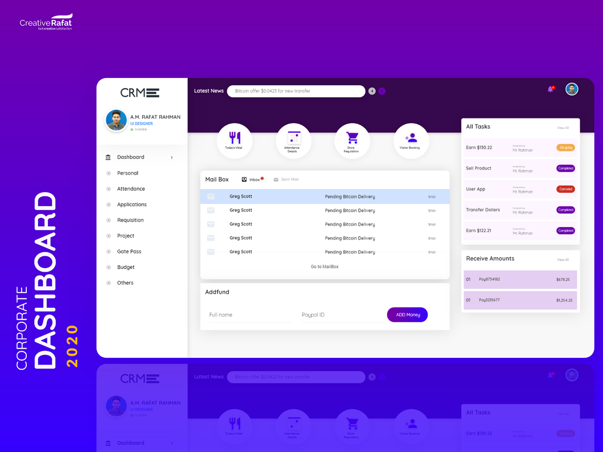

<div class="relative bg-white p-4 rounded-lg shadow-xl w-full max-w-3xl max-h-[80vh] z-50 flex flex-col">
    <div class="relative w-full h-full flex-grow flex flex-col items-center justify-center overflow-hidden">
        <button class="SIN ABSOLUTE NI NADA SOLO OPNERLO DEL LADO DERECHO" title="Cerrar"
            style="background-color: red; color: white; padding: 5px 10px;">X
        </button>
        <div class="text-lg font-semibold mt-2 mb-1 text-gray-800 text-center">archivo1.png</div>
        
    </div>
    <button id="ax-modal-prev-btn"
        class="absolute left-4 top-1/2 -translate-y-1/2 text-3xl text-white hover:text-gray-300 focus:outline-none bg-black bg-opacity-30 hover:bg-opacity-50 rounded-full p-2 transition-colors"
        title="Anterior">❮
    </button>
    <button id="ax-modal-next-btn"
        class="absolute right-4 top-1/2 -translate-y-1/2 text-3xl text-white hover:text-gray-300 focus:outline-none bg-black bg-opacity-30 hover:bg-opacity-50 rounded-full p-2 transition-colors"
        title="Siguiente">❯
    </button>
</div>